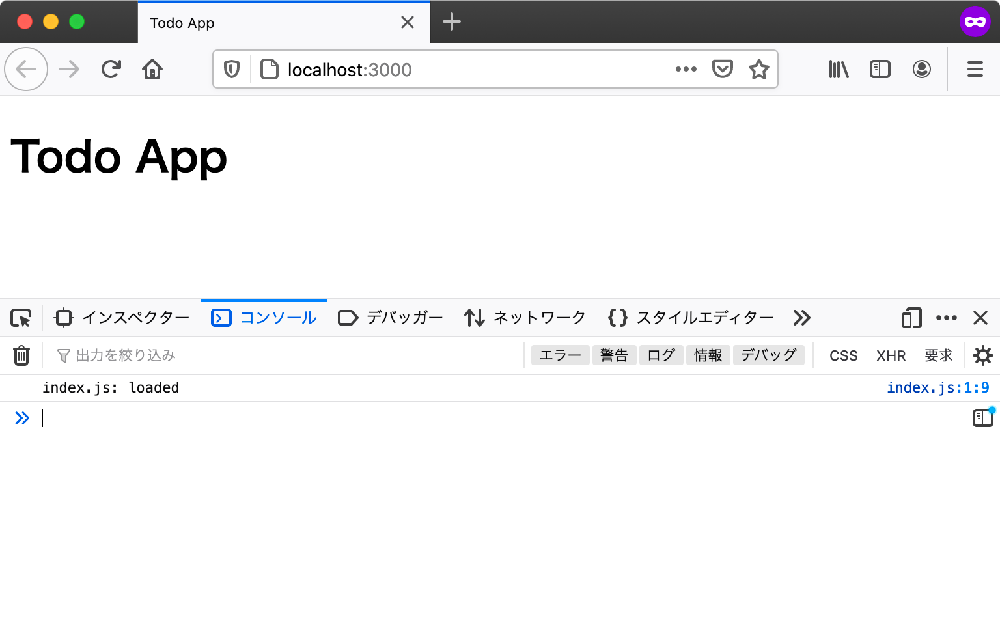

エントリーポイント
エントリーポイントとは、アプリケーションの中で一番最初に呼び出される部分のことです。
「Ajax通信:エントリーポイント」のユースケースでは、エントリーポイントはHTML（index.html）のみでした。
まずHTMLが読み込まれ、次にHTMLの中に書かれているscript要素で指定したJavaScriptファイルが読み込まれます。
今回のTodoアプリはJavaScriptの処理をモジュール化し、それぞれのモジュールを別々のJavaScriptファイルとして作成していきます。
JavaScriptモジュールはHTMLから<script type="module">で読み込むことができますが、script要素ごとに別々のモジュールスコープを持ちます。
モジュールスコープとは、モジュールのトップレベルに自動的に作成されるスコープで、グローバルスコープの下に作られます。
JavaScriptモジュールを別々のscript要素で読み込むと、モジュール同士でスコープが異なるため、モジュール同士で連携できません。
次のコードは、それぞれの<script type="module">同士のスコープが異なるため、別のscript要素で定義した変数にアクセスできないことを示しています。
これはJavaScriptモジュールをファイルにしてsrc属性で読み込んだ場合も同様です。
<script type="module">
export const scopeA = "A";
</script>
<script type="module">
// 異なるmoduleスコープの変数には直接アクセスできない
console.log(scopeA); // => ReferenceError: scopeA is not defined
</script>
このようにモジュールを別々のscript要素で扱うとモジュール同士は連携できません。
そのため、HTMLではscript要素でindex.jsのみを読み込み、このindex.jsからimport文で他のモジュールを読み込みます。
import文を使うことで、モジュール間は1つの<script type="module">のスコープ内に収まるため、モジュール同士で連携できます。
このHTMLから読み込むJavaScriptファイル（index.js）をJavaScriptにおけるエントリーポイントとします。
つまり、今回作成するTodoアプリではエントリーポイントとしてHTMLとJavaScriptの2つを用意します。
index.html: 最初に読み込まれるファイル、index.jsを読み込むindex.js:index.htmlから読み込まれるファイル、JavaScriptでは最初に読み込まれる
このセクションでは、この2つのエントリーポイントを作成して読み込むところまでを確認します。
プロジェクトディレクトリを作成
今回作成するアプリには、HTMLやJavaScriptなど複数のファイルが必要となります。 そのため、まずそれらのファイルを置くためのディレクトリを作成します。
ここではtodoappという名前で新しいディレクトリを作成します。
ここからは作成したtodoappディレクトリ以下で作業していきます。
またこのプロジェクトで作成するファイルは、必ず文字コード（エンコーディング）をUTF-8、改行コードをLFにしてファイルを保存します。
HTMLファイルの用意
エントリーポイントとして、まずは最低限の要素だけを配置したHTMLファイルを作成しましょう。
エントリーポイントとなるHTMLとしてindex.htmlをtodoappディレクトリに作成し、次のような内容にします。
body要素の一番下でscript要素を使って読み込んでいるindex.jsが、今回のアプリケーションの処理を記述するJavaScriptファイルです。
index.html
<!DOCTYPE html>
<html lang="ja">
<head>
<meta charset="utf-8" />
<title>Todo App</title>
</head>
<body>
<h1>Todo App</h1>
<script type="module" src="index.js"></script>
</body>
</html>
次にindex.jsをtodoappディレクトリに作成し、次のような内容にします。
index.jsにはスクリプトが正しく読み込まれたことを確認できるように、コンソールにログを出力する処理だけを書いておきます。
index.js
console.log("index.js: loaded");
ここまでのtodoappディレクトリのファイル配置は次のようになっています。
todoapp
├── index.html
└── index.js
次はこのindex.htmlをブラウザで開いて、コンソールにログが出力されることを確認していきます。
ローカルサーバーでHTMLを確認する
ウェブブラウザでindex.htmlを開く前に、開発用のローカルサーバーを準備します。
ローカルサーバーを立ち上げずに直接HTMLファイルを開くこともできますが、その場合file:///からはじまるURLになります。
fileスキーマではSame Origin Policyにより、JavaScriptモジュールが正しく動作しません。
そのため、本章ではローカルサーバーを立ち上げた上で、httpからはじまるURLでアクセスすることを前提としています。
コマンドラインでtodoappディレクトリへ移動し、次のコマンドでローカルサーバーを起動します。
npxコマンドを使って、この書籍用に作成された@js-primer/local-serverというローカルサーバーモジュールをダウンロードと同時に実行します。
まだnpxコマンドが用意できていなければ、先に「アプリケーション開発の準備」の章を参照してください。
# todoapp/ディレクトリに移動する
$ cd todoapp/
# todoapp/をルートにしたローカルサーバーを起動する
$ npx --yes @js-primer/local-server
todoappのローカルサーバーを起動しました。
次のURLをブラウザで開いてください。
URL: http://localhost:3000
起動したローカルサーバーのURL（http://localhost:3000）へブラウザでアクセスしてみましょう。
ブラウザにはindex.htmlの内容が表示され、開発者ツールのコンソールにindex.js: loadedというログが出力されていることが確認できます。

開発者ツールでのコンソールログの確認方法
Console APIで出力したログを確認するには、ウェブブラウザの開発者ツールを開く必要があります。 ほとんどのブラウザに開発者ツールが同梱されていますが、本章ではFirefoxを使って確認します。 開発者ツールのコンソールタブを開くとConsole APIで出力したログを確認できます。
Firefoxの開発者ツールは次のいずれかの方法で開きます。
- Firefox メニュー（メニューバーがある場合や macOS では、ツールメニュー）の "ブラウザーツール"のサブメニューから "ウェブ開発ツール" を選択する
- キーボードショートカット
Ctrl+Shift+K（macOSではCommand+Option+K）を押下する
詳細は「ブラウザーの開発者ツールとは？」を参照してください。
コンソールログが表示されない
HTMLは表示されるがコンソールログにindex.js: loadedが表示されない場合は、次のような問題に該当してないかを確認してください。
[エラー例] index.jsの読み込みに失敗している
script要素のsrc属性に指定したindex.jsのパスにファイルが存在しているかを確認してください。
<script type="module" src="index.js">とした場合はindex.htmlとindex.jsは同じディレクトリに配置する必要があります。
また、CORS policy Invalidのようなエラーがコンソールに表示されている場合は、Same Origin Policyによりindex.jsの読み込みが失敗しています。
先ほども紹介したように、file:からはじまるページ上からはJavaScriptモジュールは正しく動作しません。
そのため、ローカルサーバーを起動し、ローカルサーバー（http:からはじまるURL）にアクセスしていることを確認してください。
[エラー例] JavaScriptモジュールに非対応のブラウザを利用している
JavaScriptモジュールはまだ新しい機能であるため、バージョンが60以上のFirefoxが必要です。
バージョンが60未満のFirefoxでは、JavaScriptモジュールであるindex.jsが読み込めないためコンソールログは出力されません。
今回のTodoアプリでは、ネイティブでJavaScriptモジュールに対応しているブラウザが必要です。 Can I UseにネイティブでJavaScriptモジュールに対応しているブラウザがまとめられています。 非対応のブラウザでもBundlerと呼ばれるツールを使うことで対応できますが、本章では省略します。
モジュールのエントリーポイントの作成
最後にエントリーポイントとなるindex.jsから別のJavaScriptファイルをモジュールとして読み込んでみましょう。
このアプリではJavaScriptモジュールが複数登場するためsrc/というディレクトリを作り、src/の下にJavaScriptモジュールを書くことにします。
今回はsrc/App.jsというファイルを作成し、これをindex.jsからモジュールとして読み込みます。
次のようなファイル配置となるようにsrc/App.jsを作成します。
todoapp
├── index.html
├── index.js
└── src
└── App.js
src/App.jsファイルを作成し、次のような内容のJavaScriptモジュールとします。
App.jsはAppというクラスを名前つきエクスポートしているモジュールです。
また、Appクラスのコンストラクタにはコンソールログを出力するコードを確認用に書いておきます。
src/App.js
console.log("App.js: loaded");
export class App {
constructor() {
console.log("App initialized");
}
}
次に、このsrc/App.jsをindex.jsから利用するためにimportします。
index.jsを次のように書き換え、App.jsからAppクラスをインポートしてインスタンス化します。
index.js
import { App } from "./src/App.js";
const app = new App();
再度ローカルサーバーのURL（http://localhost:3000）にブラウザでアクセスし、リロードしてみましょう。
コンソールログには、次のように処理の順番どおりのログが出力されます。
App.js: loaded
App initialized
まずindex.jsからsrc/App.jsが名前つきエクスポートしているAppクラスを名前つきインポートしています。
次にAppクラスがインスタンス化されていることがログから確認できます。
これでHTMLとJavaScriptそれぞれのエントリーポイントの作成と動作を確認できました。
App.jsの読み込みに失敗する
ここまでのJavaScriptモジュールの読み込みでエラーが発生して動かない場合には、次のことを確認します。
ディレクトリ構造やimport文で指定したファイルパスが異なると、ファイルを読み込むことができずにエラーとなってしまいます。
この場合は開発者ツールを開き、コンソールにエラーが出ていないかを確認してみてください。
import文を使ったJavaScriptのモジュール読み込み時に起きる典型的なエラーと対処を次にまとめています。
[エラー例] SyntaxError: import declarations may only appear at top level of a module
「import宣言はモジュールのトップレベルでしか利用できません」というエラーが出ています。
このエラーが出ているということは、import文を使える条件を満たしていないということです。
つまり、import文がトップレベルではないところに書かれている、またはモジュールではない実行コンテキストで実行されているということです。
関数の中などにimport宣言していると、import宣言がトップレベルではないためエラーが発生します。
この場合はimport文をトップレベル（プログラムの直下）に移動させてみてください。
モジュールではない実行コンテキストで実行されているというのは、裏を返せば実行コンテキストがScriptとなっているということです。
JavaScriptには実行コンテキストとしてScriptとModuleがあります。
import文は実行コンテキストがModuleでないと利用できません。
そのため、script要素のtype属性にmodule指定を忘れていないかをチェックしてみてください。
実行コンテキストをモジュールとして実行するには<script type="module" src="index.js">のようにtype=moduleを指定する必要があります
（index.jsからimport文で読み込んだApp.jsは実行コンテキストを引き継ぐため、モジュールの実行コンテキストで処理されます）。
[エラー例] モジュールのソース “http://localhost:3000/src/App” の読み込みに失敗しました。
App.jsを読み込めないというエラーが出ています。
エラーメッセージをよく見るとAppとなっていてApp.jsではありません。
import文では、読み込むファイルの拡張子を省略しません。
そのため、Appのように拡張子（.js）を省略して書いている場合はこのエラーが発生します。
// エラーとなる例
import { App } from "./src/App";
正しくは次のように拡張子まで含めたパスを記述します。
また指定したパス（./src/App.js）にファイルが存在するかを確認してください。
// 正しい例
import { App } from "./src/App.js";
まとめ
このセクションでは、エントリーポイントとなるHTMLを作成し、JavaScriptモジュールのエントリーポイントとなるJavaScriptファイルを読み込むところまでを実装しました。
このセクションのチェックリスト
todoappという名前のプロジェクトディレクトリを作成した- エントリーポイントとなる
index.htmlを作成した - JavaScriptのエントリーポイントとなる
index.jsを作成しindex.htmlから読み込んだ - ローカルサーバーを使って
index.htmlを表示した src/App.jsを作成し、index.jsからimport文で読み込めるのを確認した
ここまでのTodoアプリは次のURLで確認できます。